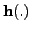

To initialise a Levenberg-Marquardt algorithm instance use the call
Gan_LevMarqStruct *lm;
/* initialise Levenberg-Marquardt algorithm */
lm = gan_lev_marq_alloc();
We build the points from ground-truth values for the quadratic coefficients
, and add random Gaussian noise:
/* number of points */
#define NPOINTS 100
/* ground-truth quadratic coefficients a,b,c */
#define A_TRUE 2.0
#define B_TRUE 3.0
#define C_TRUE 4.0
/* noise standard deviation */
#define SIGMA 1.0
/* arrays of x & y coordinates */
double xcoord[NPOINTS], ycoord[NPOINTS];
/* build arrays of x & y coordinates */
for ( i = NPOINTS-1; i >= 0; i-- )
{
/* x-coordinates evenly spaced */
xcoord[i] = (double) i;
/* construct y = a*x^2 + b*y + c + w with added Gaussian noise w */
ycoord[i] = A_TRUE*xcoord[i]*xcoord[i] + B_TRUE*xcoord[i]
+ C_TRUE + gan_normal_sample(0.0, SIGMA);
}
Here we defined a noise level SIGMA as the estimated standard deviation
of the random observation errors, the same for each point.
Now that we have constructed the input data, the next thing is to create
observations for each point.
Gandalf's version of Levenberg-Marquardt uses callback functions to
evaluate observation  and observation Jacobians
Gan_Vector *z; /* define observation vector */
Gan_SquMatrix *Ni; /* define observation inverse covariance */
/* allocate observation vector z and inverse covariance Ni */
z = gan_vec_alloc(1);
Ni = gan_symmat_fill_va ( NULL, 1, 1.0/(SIGMA*SIGMA) );
for ( i = NPOINTS-1; i >= 0; i-- )
{
/* construct point observation */
z = gan_vec_fill_va ( z, 1, ycoord[i] );
cu_assert ( z != NULL );
cu_assert ( gan_lev_marq_obs_h ( lm, z, &xcoord[i], Ni, quadratic_h )
!= NULL );
}
We create the observation vector with size one; this can be adjusted
dynamically if necessary; see Section 3.2.1.2.
The observation callback function quadratic_h() is defined as follows:
/* observation callback function for single point */
static Gan_Bool
quadratic_h ( Gan_Vector *x, /* state vector */
Gan_Vector *z, /* observation vector */
void *zdata, /* user pointer attached to z */
Gan_Vector *h, /* vector h(x) to be evaluated */
Gan_Matrix *H ) /* matrix dh/dx to be evaulated or NULL */
{
double a, b, c;
/* read x-coordinate from user-defined data pointer */
double xj = *((double *) zdata);
/* read quadratic parameters from state vector x=(a b c)^T*/
if ( !gan_vec_read_va ( x, 3, &a, &b, &c ) )
{
gan_err_register ( "quadratic_h", GAN_ERROR_FAILURE, NULL );
return GAN_FALSE;
}
/* evaluate h(x) = h(a,b,c) = y = a*x*x + b*x + c */
if ( gan_vec_fill_va ( h, 1, a*xj*xj + b*xj + c ) == NULL )
{
gan_err_register ( "quadratic_h", GAN_ERROR_FAILURE, NULL );
return GAN_FALSE;
}
/* if Jacobian matrix is passed as non-NULL, fill it with the Jacobian
matrix (dh/da dh/db dh/dc) = (x*x x 1) */
if ( H != NULL &&
gan_mat_fill_va ( H, 1, 3, xj*xj, xj, 1.0 ) == NULL )
{
gan_err_register ( "quadratic_h", GAN_ERROR_FAILURE, NULL );
return GAN_FALSE;
}
/* success */
return GAN_TRUE;
}
Note the the
So far we have merely registered the observations and their callback
routines. No processing has started. To get started with some actual
optimisation we need to initialise the state vector with some values for
 ,
,  and
and  . This involves invoking the routine
. This involves invoking the routine
double residual;
/* initialise Levenberg-Marquardt algorithm */
gan_lev_marq_init ( lm, quadratic_init, NULL, &residual );
quadratic_init() is another callback routine that computes values for
the state vector
/* initialisation function for state vector */
static Gan_Bool
quadratic_init ( Gan_Vector *x0, /* state vector to be initialised */
Gan_List *obs_list, /* list of observations */
void *data ) /* user data pointer */
{
int list_size = gan_list_get_size(obs_list);
Gan_LevMarqObs *obs;
Gan_Matrix33 A;
Gan_Vector3 b;
double xj, y;
/* we need at least three points to fit a quadratic */
if ( list_size < 3 ) return GAN_FALSE;
/* initialise quadratic by interpolating three points: the first, middle and
last point in the list of point observations. We construct equations
(y1) (x1*x1 x1 1) (a)
(y2) = (x2*x2 x2 1) (b) = A * b for 3x3 matrix A and 3-vector b
(y3) (x3*x3 x3 1) (c)
and solve the equations by direct matrix inversion (not pretty...) to
obtain our first estimate of a, b, c given points (x1,y1), (x2,y2) and
(x3,y3).
*/
/* first point */
gan_list_goto_pos ( obs_list, 0 );
obs = gan_list_get_current ( obs_list, Gan_LevMarqObs );
xj = *((double *) obs->details.h.zdata); /* read x-coordinate */
A.xx = xj*xj; A.xy = xj; A.xz = 1.0; /* fill first row of equations in A */
gan_vec_read_va ( &obs->details.h.z, 1, &y );
b.x = y; /* fill first entry in b vector */
/* middle point */
gan_list_goto_pos ( obs_list, list_size/2 );
obs = gan_list_get_current ( obs_list, Gan_LevMarqObs );
xj = *((double *) obs->details.h.zdata); /* read x-coordinate */
A.yx = xj*xj; A.yy = xj; A.yz = 1.0; /* fill first row of equations in A */
gan_vec_read_va ( &obs->details.h.z, 1, &y );
b.y = y; /* fill second entry in b vector */
/* last point */
gan_list_goto_pos ( obs_list, list_size-1 );
obs = gan_list_get_current ( obs_list, Gan_LevMarqObs );
xj = *((double *) obs->details.h.zdata); /* read x-coordinate */
A.zx = xj*xj; A.zy = xj; A.zz = 1.0; /* fill first row of equations in A */
gan_vec_read_va ( &obs->details.h.z, 1, &y );
b.z = y; /* fill second entry in b vector */
/* invert matrix and solve (don't do this at home) */
A = gan_mat33_invert_s(&A);
b = gan_mat33_multv3_s ( &A, &b );
/* fill state vector x0 with our initial values for a,b,c */
gan_vec_fill_va ( x0, 3, b.x, b.y, b.z );
return GAN_TRUE;
}
We are now ready to apply optimisation iterations using the routine
gan_lev_marq_iteration(). The following code
applies ten iterations, adjusting the damping factor in the way suggested
in [12]. This simple scheme decreases the damping when the
residual decreases, and vice versa.
double lambda = 0.1; /* damping factor */
double new_residual;
/* apply iterations */
for ( i = 0; i < 10; i++ )
{
gan_lev_marq_iteration ( lm, lambda, &new_residual );
if ( new_residual < residual )
{
/* iteration succeeded in reducing the residual */
lambda /= 10.0;
residual = new_residual;
}
else
/* iteration failed to reduce the residual */
lambda *= 10.0;
}
To extract the optimised solution, use the code
Gan_Vector *x; /* get optimised solution */ x = gan_lev_marq_get_x ( lm );Note that the x pointer passed back here points to a vector internal to the Levenberg-Marquardt software, and should not be freed. To free the Levenberg-Marquardt structure and the matrices & vectors created above, use the code
gan_squmat_free ( Ni ); gan_vec_free ( z ); gan_lev_marq_free ( lm );